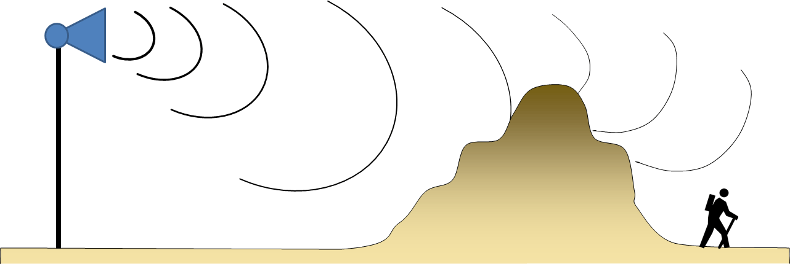

Offline Website SoftwareDiffraction is the process of sound ‘bending’ around objects. As with most aspects of acoustics, this is a complex phenomena, governed by equally complex equations. However, some of the basics are easy to understand.
First and foremost, diffraction is frequency dependent, or more precisely, dependent on the wavelength of the sound. The wavelength is the length of the sound wave, and is inversely related to the frequency. Sounds at 100 Hz have a wavelength of about 10 feet, sounds at 1,000 Hz have a wavelength of about 1 foot, and sounds at 10,000 Hz have a wave length of about 0.1 foot.
If an object is much smaller than the wavelength of sound it is interacting with, then the sound will be unaffected by the object. For example, a 1,000 Hz signal (with a wavelength of about 1 foot) will not be affected by power lines (with a diameter of less than an inch).
If an object is about the same size as the wavelength, the sound will tend to bend around the object, with large changes in the propagation. And if the object is much larger than the wavelength, it will tend to block the sound entirely. Leaves on trees, and even the tree trunks themselves, have a small impact on sounds below 1,000 Hz, while mountains have can a significant impact.

Offline Website Software